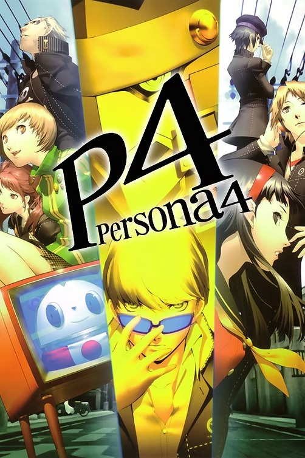

Sinopse
Persona 4 é um RPG desenvolvido pela Atlus que segue a história de um grupo de jovens na cidade fictícia de Inaba. O protagonista se muda para a cidade e logo se vê envolvido em uma série de mistérios envolvendo um assassinato e fenômenos sobrenaturais. Junto aos seus amigos, o protagonista explora o "Mundo da TV", onde enfrentam criaturas e buscam respostas para os assassinatos que ocorreram na cidade.
O jogo combina exploração de masmorras, combates por turnos e elementos de simulação social, onde o jogador interage com outros personagens, faz amigos e cria laços que influenciam no desenvolvimento de suas "Personas" e habilidades.
Características Principais
- Combinação de RPG com elementos de simulação social
- Exploração de um mundo vibrante e com diversos personagens
- Sistema de combate por turnos com "Personas" e fusões
- Investigação de assassinatos e resolução de mistérios em uma pequena cidade
- Desenvolvimento de laços com outros personagens para melhorar habilidades
- Trilha sonora memorável e atmosfera imersiva
Imagens Adicionais